Importeren en toepassen MIM-toolbox in Enterprise Architect
Stap 1: Importeer MIM-toolbox
- Download het XML-bestand van de MIM-toolbox.
- Verwijder eventueel eerst de oudere versie van de toolbox als je die niet meer nodig hebt (Toolbox verwijderen).
- Open Enterprise Architect
- Open 'Resources'
- Kies rechts in beeld op 'Portals', of direct op het gelijknamige tablad in de 'Project Browser'
- Selecteer in het dropdown-menu 'Windows'
- Kies 'Resources' (onder 'Explore')
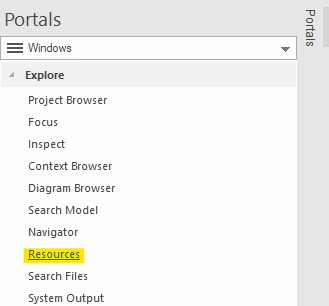
- Klik op 'MDG Technologies'
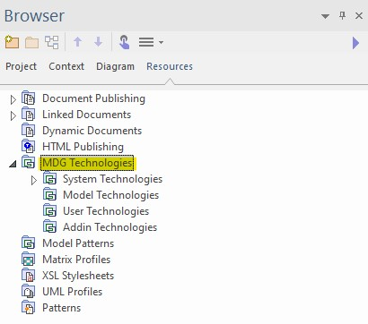
Note
Hier moet je de keuze maken of je de toolbox op model- of gebruikersniveau importeert. Beide hebben voor- en nadelen: - Model: alleen te gebruiken binnen één EA-project. Voor elke project moet je apart de toolbox importeren. Indien je dit project met een andere gebruiker deelt, beschikt deze gebruiker ook over de toolbox. Dit is de aanbevolen optie. Dit geeft de minste kans op conflicten. - User: Je hoeft de toolbox slechts éénmalig te importeren. Vervolgens is de toolbox automatisch beschikbaar voor alle EA-projecten waar je als gebruiker aan werkt. Het nadeel is dat bij het delen van projecten de toolbox niet mee komt. Bovendien kunnen er conflicten tussen toolboxen ontstaan (zie: volgende informatiekader).Warning
Indien binnen jouw EA-omgeving ook een toolbox van een extensie op het MIM aanwezig is (bijvoorbeeld voor de BRO), dan is het raadzaam om de toolboxen alleen op model-niveau te importeren. Indien tenminste één van de twee op user-niveau is geïmporteerd, kan dit bij het toewijzen van stereotypen verwarring opleveren. Veel stereotypen hebben exact dezelfde naam en voor EA is het dan onduidelijk welke MDG Technology het moet kiezen. De bovenstaande aanpak houdt de werkwijze zuiverder.
- Klik met de rechtermuisknop op 'Model Technologies' of 'User Technologies'.
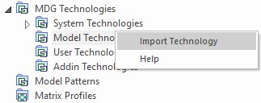
- Selecteer 'Import technology'.
- Zoek het gedownloade XML-bestand van de MIM-toolbox op en kies 'Openen'.
- Overigens kun je ook in dit venster nog kiezen tussen 'model' of 'user'.
- Op welke plek je de keuze maakt voor 'model' of 'user', maakt geen verschil.
- De velden 'Technology', 'Version' en 'Notes' worden nu automatisch ingevuld met de juiste informatie.
- Controleer het versienummer:
Version: 1.1.1.
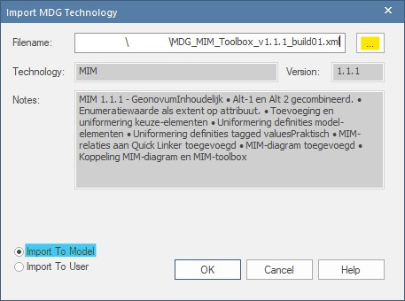
- Klik 'Ok'
- Navigeer in het 'Resources' naar 'MDG Technologies' > 'Model Technologies'.
- Controleer of hier nu een map met de naam 'MIM' staat.
- Controleer ook of het MIM-versienummer klopt bij 'UML Profiles', 'Diagram Types' en 'Toolboxes'.
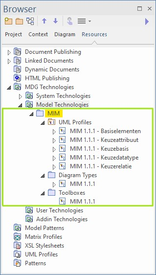
- Bij een user import zal er nog een venster verschijnen met de tekst 'Copy succesfull'.
- De MIM-toolbox is nu beschikbaar voor gebruik, maar het is raadzaam om eerst de volgende instructies door te nemen:
- Instructie voor het gebruik van het MIM-diagram.
- Instructie voor het gebruik van de Quick Linker.
- Instructie voor het gebruik van toolbox-item «Relatierol».
Warning
De MIM-toolbox heeft een versienummer. Deze staat niet in de naam. Indien je besloten hebt om oudere versies van de MIM-toolbox niet te verwijderen, komt de naam 'MIM' mogelijk meerdere malen voor. Het beheren van toolboxen in Enterprise Architect doe je op deze manier.
Stap 2: Toepassen MIM-diagram
In voorgaande versies werd de MIM-toolbox toegepast op een standaard UML diagram (UML::Class). Dat kan nog steeds. Dit heeft echter één nadelige eigenschap. Als je in je project met meerdere diagrammen werkt, kan het voorkomen dat bij het wisselen tussen diagrammen de toolbox terugspringt op de standaard UML-toolbox. Hierdoor moet je de MIM-toolbox opnieuw opzoeken.
Dit probleem wordt veroorzaakt doordat een diagram en een toolbox aan elkaar gekoppeld zijn. Daarom is in versie 1.1.1 van de MIM-toolbox een speciaal MIM-diagram aangemaakt waaraan de toolbox gekoppeld is. Dit diagram is een directe afgeleide van het standaard 'UML Class diagram'. Hieronder staat uitgelegd hoe je dit kunt toepassen.
- Ga in de 'Project Browser' naar 'Project'.
- Selecteer een package.
- Klik op het diagramlogo om een nieuw diagram aan te maken.
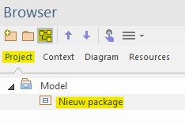
Warning
Dit kan alleen als je onder model in de Project browser al een package hebt aangemaakt. Als je dat nog niet hebt, maak dan eerst een (nieuw) package aan.
- Er opent nu een venster.
- Geef het diagram een naam.
- Klik op het dropdown-menu bij 'Type'.
- Selecteer 'Specialized' > 'User Technologies' of 'Model Technologies' (afhankelijk van de manier waarop je de toolbox geimporteerd hebt).
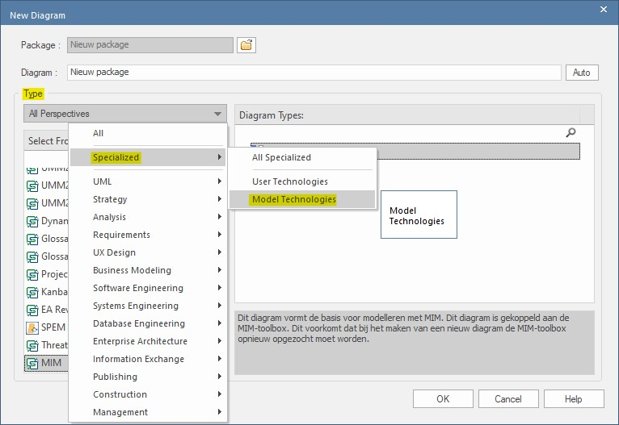
- Klik in het deelvenster 'Select From' op 'MIM 1.1.1'.
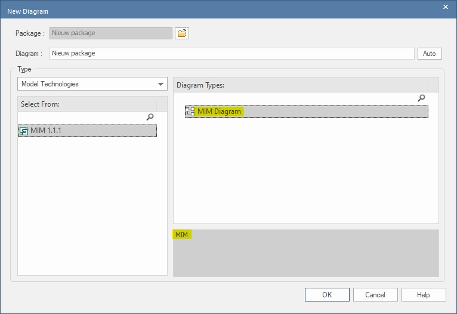
- Nu verschijnt in het deelvenster 'Diagram Types' het 'MIM Diagram'.
- Selecteer het diagram en klik op 'Ok'.
Note
Het is belangrijk dat je het diagram daadwerkelijk selecteert. Je kunt herkennen of dit gelukt is, doordat in het onderste deelvenster een toelichtende tekst op het diagram verschijnt (anders staat er alleen 'MIM').
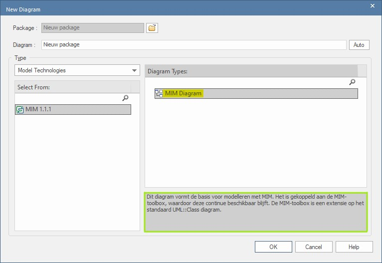
- De MIM-toolbox verschijnt nu in het toolbox-menu.
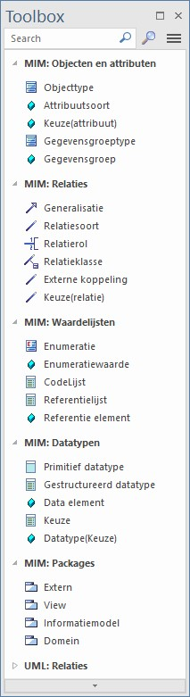
- Dubbelklik in de 'Project browser' op het nieuwe diagram.
- In het venster 'Properties' zie je dat het diagram van het type 'MIM' is.
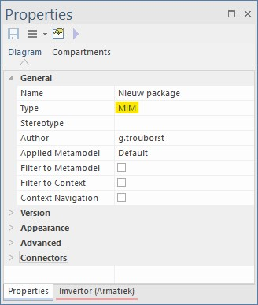
Het MIM-versienummer komt nu ook terug het veld Stereotype in het venster 'Properties' van het object. - Maak een objecttype "A" aan. - Controleer vervolgens in de het venster 'Properties' of in de naam van het stereotype het betreffende MIM-versienummer verschijnt. - Tevens verschijnt er in dit venster een deelmenu met de titel '«Objecttype» ( from MIM 1.1.1 - Basiselementen )' - Als dit klopt, is de toolbox correct geïmporteerd.
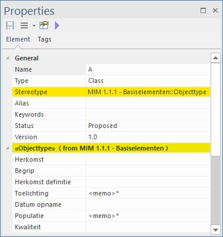
Stap 3: Toepassen Quick Linker
De Quick Linker is een hulpmiddel om snel en eenvoudig relaties te kunnen leggen tussen verschillende elementen. Het voordeel hiervan is dat het de gebruiker inzicht geeft in de volgens MIM toegestane relaties. De Quick Linker is beschikbaar via een icoontje dat rechtsboven een diagramelement verschijnt op het moment dat je het selecteert.
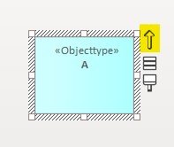
Je kunt de Quick Linker op drie manieren inzetten, namelijk voor het:
- Verbinden van twee bestaande modelelementen
- Creëren van nieuwe modelelementen
- Creëren van meerdere modelelemten tegelijk
Hieronder beschrijven we elke methode afzonderlijk.
3.1 Verbinden bestaande modelelementen
- Klik met de muis op het icoon.
- Houd de muisknop ingedrukt en trek een lijn naar het object waarmee je het wilt verbinden.
- Er verschijnt een stippellijn en een menu.
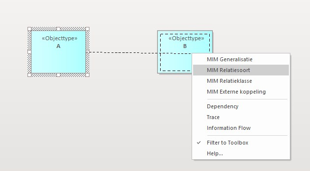
- Selecteer het gewenste type MIM-relatie (bijvoorbeeld:
«Generalisatie».
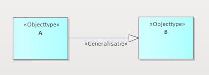
3.2 Nieuw modelelement
Je kunt ook vanuit een bestaand element een nieuw modelelement creëren. Dat gaat als volgt:
- Klik met de muis op het icoon.
- Houd de muisknop ingedrukt en trek een lijn naar een lege plek in het diagram.
- Er verschijnt een stippellijn en een menu.
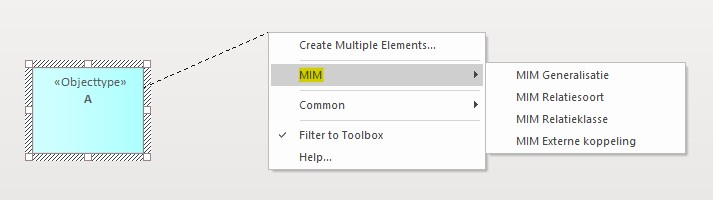
- Dit menu ziet er anders uit dan bij het verbinden van twee bestaande elementen.
- Navigeer naar 'MIM' en selecteer het gewenste type MIM-relatie (bijvoorbeeld:
«Generalisatie»)
3.3 Meerdere nieuwe modelelementen
Ook is het mogelijk om vanuit een bestaand element meerdere én verschillende soorten modelelementen in één keer te creëren. Dat gaat als volgt:
- Klik met de muis op het icoon.
- Houd de muisknop ingedrukt en trek een lijn naar een lege plek in het diagram.
- Er verschijnt een stippellijn en een menu.
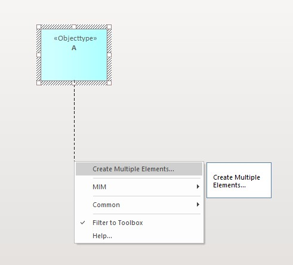
- Navigeer naar 'Create Multiple Elements'.
- Er verschijnt een nieuw venster.
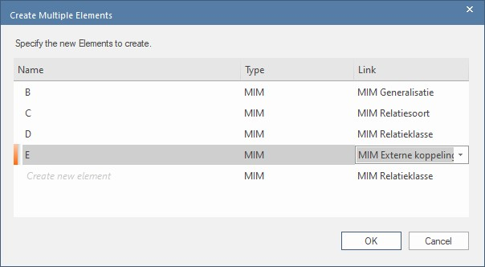
- Defineer in dit venster de elementen in de eerste kolom ('Name') en selecteer het gewenste type relatie in de derde kolom ('Type').
- Klik op 'Ok' als je klaar bent.
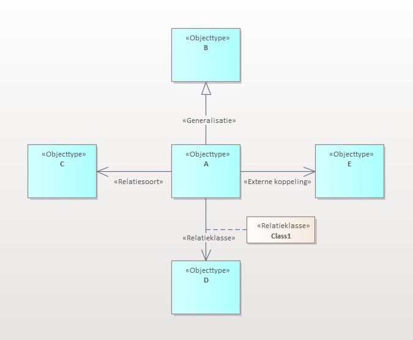
Stap 4: Toepassen toolbox-item 'Relatierol'
Net als alle andere modelelementen uit de MIM-toolbox, kun je ook de «Relatierol» in het diagram slepen. Je doet dit door een «Relatierol» naar uiteinde van een reeds bestaande «Relatiesoort» te slepen. Wanneer je in EA het stereotype «Relatierol» toewijst aan een relatie, worden de bijbehorende 'Tagged Values' automatisch meegenomen.
Note
In eerdere versies van de MIM1.1.1-toolbox ontbraken de Tagged Values bij de«Relatierol»na toewijzing. Dit is opgelost in build 5:MDG_MIM_Toolbox_v1.1.1_build05.
- Indien je twee modelelementen met elkaar verbindt door middel van een
«Relatiesoort», kun je de«Relatierol»aan de target end (of de source end) toevoegen door middel van het toolbox-item«Relatierol». - Klik op het toolbox-item
«Relatierol»en sleep het item met de muisknop ingedrukt naar de target end van de associatie en laat hier de muisknop weer los. - Er verschijnt een popup-venster.
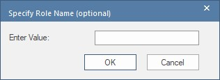
- Vul bij 'Enter value' de naam van de
«Relatierol»in en klik op 'Ok'. - Klik vervolgens in het 'Properties' venster op het 'Target' tabblad.
- Vervolgens zie je de bijbehorende Tagged Values voor alternatief 1 of alternatief 2.
Stap 5: Updaten MIM-versie in bestaand informatiemodel
Er zijn verschillende situaties denkbaar waarin je één of meerdere type modelelementen van een informatiemodel wilt updaten. Bijvoorbeeld omdat er een bug-fix is geweest. Zoals hierboven beschreven, kreeg een «Relatierol» in de eerste versies van de MIM1.1.1-toolbox (build01-build04) geen Tagged Values mee. Maar het kan ook zijn dat je alle modelelementen in een model naar de nieuwste versie van toolbox wilt updaten. Hiervoor moet je het stereotype (het modelelement) synchroniseren. De volgende stappen beschrijven hoe dat werkt.
Verwijder de oude toolbox eerst en importeer vervolgens de nieuwe versie. Doorloop daarna de volgende stappen. Hieronder gebruiken we het updaten van «Relatierol» als voorbeeld, maar je kunt dit voor elk gewenst modelelement uit de toolbox toepassen.
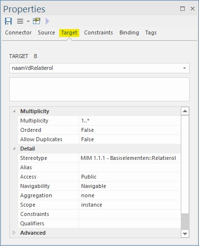
- Ga naar het toolbox-item
Relatierolen klik hier met de rechtermuisknop op.
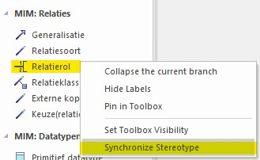
- Klik op 'Synchronize Stereotype'.
- Er opent een nieuw venster
- Hierin staat in het veld 'stereotype'
Relatierolal geselecteerd. - Klik op 'Ok'.
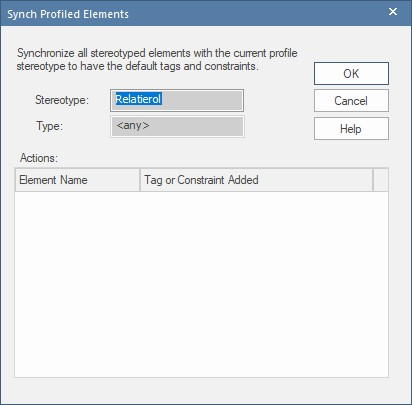
- Er verschijnt een popup-venster dat vraagt: 'Save latest changes?', klik 'Ja'.
- De tagged values zijn nu gesynchroniseerd.
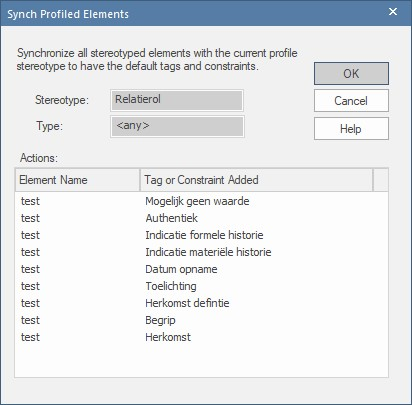
Herhaal bovenstaande stappen als je ook andere modelelementen wilt updaten.
stap 6: Verwijderen oudere toolbox
Deze instructie is bedoeld voor het verwijderen van toolboxen die je niet meer wilt gebruiken. Bijvoorbeeld oudere versies van de MIM-toolbox.
- Open Enterprise Architect
- Open 'Resources'
- Kies rechts in beeld op 'Portals'
- Selecteer in het dropdown-menu 'Windows'
- Kies 'Resources' (onder 'Explore')
- Klik op 'MDG Technologies'
Controleer nu of er onder 'Model Technologies' en/of 'User Technologies' toolboxen staan die je niet meer wilt gebruiken.
- Verwijderen 'Model Technologies'
- Klik met de rechtermuisknop op de toolbox en selecteer 'Remove technology'
- Start hierna voor de zekerheid EA opnieuw op.
- Verwijderen 'User Technologies'
- Klik met de rechtermuisknop op de toolbox en selecteer 'Locate Technology'.
- Verwijder het XML-bestand van de toolbox op deze locatie
- Start hierna voor de zekerheid EA opnieuw op.
- Ga verder met het importeren van de MIM-toolbox.
Stap 7: Toolboxen beheren
- Ga naar de menubalk boven in beeld en selecteer 'Specialize' > 'Manage-Tech'
- Hier vind je een overzicht van alle aanwezige MDG-technologies.
- Scroll naar beneden en zoek 'MIM' op.
- Indien je meerdere versies van de toolbox geïmporteerd hebt, vind je die hier terug.
- Klik op één van de versies voor meer informatie.
- In het informatievenster rechtsboven zie je welke versie het betreft. Tevens vind je hier terug of de toolbox op model- of gebruikersniveau is geïmporteerd.
- Met het checkbox in de kolom 'Enabled' kun je ervoor kiezen om bepaalde bepaalde toolboxen uit te zetten. Dit doe je door het vinkje te verwijderen.
- Ga verder met de laatste stappen van het importeren van de MIM-toolbox.
Warning
Indien je toolboxen gebruikt met gelijknamige modelelementen, bijvoorbeeld oudere MIM-toolboxen of NEN3610 BRO Grouping-NL (dat een extensie is op MIM), dan kan dit leiden tot een verwijzing naar het 'verkeerde' profiel. Enterprise Architect doet dit automatisch. Hierdoor beschikt het stereotype bijvoorbeeld niet over de gewenste tagged values.
Stap 8: Workspaces gebruiken
Note
Onderstaande tekst is nog in conceptWarning
Dit onderwerp hoort niet in deze handleiding thuis, maar in handleiding over EA. Het kan wel handig zijn om vanuit deze handleiding ernaar te verwijzen.
8.1 Overzicht handige vensters bij het modelleren
- Project Browser
- Resources
- Notes
- Tagged Values
- Features
- Pan & Zoom
- Relationships
- Relationship Matrix
- Toolbox
8.2 Waar je ze vindt
Ga allereerst naar Klik rechtsboven op Portals en selecteer Windows.
De meeste vensters uit 8.1 vind je terug in de volgende deelmenu's:
Explore - Project Browser - Resources
Properties - Properties - Notes - Tagged Values - Features
Diagram - Pan & Zoom
Trace - Relationships - Relationship Matrix
Het venster Toolbox vind je in de taakbalk bovenin. Ga naar:
Design > Diagram > Toolbox (Ctrl+Shift+3)
8.3 En hoe je een workspace maakt en waarom dat handig kan zijn
Note To do: tekst schrijven